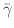

Next: MIF 1.2
Up: Problem Specification File Formats
Previous: Problem Specification File Formats
Subsections
MIF 1.1
The MIF 1.1 format is an older micromagnetic problem specification
format used by the mmSolve 2D solvers. It is not compatible with the
MIF 2.1 format used by the Oxs 3D solvers. However, the command line tool
mifconvert may be used as a conversion aid;
mifconvert is also called automatically by Oxs solvers when a
MIF 1.x file is input to them.
A sample MIF 1.1 file is included below. The first line of a MIF file must be of the
form ``# MIF x.y'', where x.y represents the format revision
number. (The predecessor MIF 1.0 format was not included in any
released version of OOMMF.)
After the format identifier line, any line ending in a backslash,
`\', is joined to the succeeding line before any other processing
is performed. Lines beginning with a `#' character are comments
and are ignored. Blank lines are also ignored.
All other lines must consist of a Record Identifier followed by
a parameter list. The Record Identifier is separated from the
parameter list by one or more `:' and/or `=' characters. Whitespace
and case is ignored in the Record Identifier field.
The parameter list must be a proper Tcl list. The
parameters are parsed (broken into separate elements) following normal
Tcl rules; in short, items are separated by whitespace, except as
grouped by double quotes and curly braces. Opening braces and quotes
must be whitespace separated from the preceding text. The grouping
characters are removed during parsing. Any `#' character that is
found outside of any grouping mechanism is interpreted as a comment
start character. The `#' and all following characters on that line
are interpreted as a comment.
Order of the records in a MIF 1.1 file is unimportant, except as
explicitly stated below. If two or more lines contain the same Record
Identifier, then the last one takes precedence,
with the exception of Field Range records, of which there may be several
active. All records are required unless listed as optional. Some of
these record types are not supported by mmProbEd, however you
may modify a MIF 1.1 file using any plain text editor and supply it to
mmSolve2D
using
FileSource.
For convenience, the Record Identifier tags are organized into several
groups; these groups correspond to the top-level buttons presented by
mmProbEd. We follow this convention below.
Material parameters
- # Material Name: This is a convenience entry for
mmProbEd; inside the MIF 1.1 file it is a comment line. It
relates a symbolic name (e.g., Iron) to specific values to the next
4 items. Ignored by solvers.
- Ms: Saturation magnetization
in A/m.
- A: Exchange stiffness in J/m.
- K1: Crystalline
anisotropy
constant in J/m3
. If K1 > 0
, then the anisotropy axis (or axes)
is an easy axis; if K1 < 0
then the anisotropy axis is a hard axis.
- Anisotropy Type: Crystalline anisotropy type; One of
<uniaxial|cubic>.
- Anisotropy Dir1: Directional cosines of first crystalline
anisotropy axis, taken with respect to the coordinate axes (3
numbers). Optional; Default is 1 0 0 (x-axis).
- Anisotropy Dir2: Directional cosines of second crystalline
anisotropy axis, taken with respect to the coordinate axes (3
numbers). Optional; Default is 0 1 0 (y-axis).
For uniaxial materials it suffices to specify only Anisotropy
Dir1. For cubic materials one must also specify Anisotropy
Dir2; the third axis direction will be calculated as the cross
product of the first two. The anisotropy directions will be
automatically normalized if necessary, so for example 1 1 1 is
valid input (it will be modified to .5774 .5774 .5774). For cubic
materials, Dir2 will be adjusted to be perpendicular to Dir1 (by
subtracting out the component parallel to Dir1).
- Anisotropy Init:
Method to use to set up directions of anisotropy axes, as a function
of spatial location; This is a generalization of the Anisotropy
Dir1/2 records. The value for this record should be one of
<Constant|UniformXY|UniformS2>. Constant uses the
values specified for Anisotropy Dir1 and Dir2, with no dispersion.
UniformXY ignores the values given for Anisotropy Dir1 and
Dir2, and randomly varies the anisotropy directions uniformly in the
xy-plane. UniformS2 is similar, but randomly varies the
anisotropy directions uniformly on the unit sphere (S2
). This
record is optional; the default value is Constant.
- Edge K1: Anisotropy
constant
similar to crystalline anisotropy constant K1 described above, but
applied only along the edge surface of the part. This is a uniaxial
anisotropy, directed along the normal to the boundary surface. Units
are J/m3
, with positive values making the surface normal an easy
axis, and negative values making the surface an easy plane. The
default value for Edge K1 is 0, which disables the term.
- Do Precess:
If 1, then enable the precession term in the
Landau-Lifshitz ODE. If 0, then do pure
damping only. (Optional; default value is 1.)
- Gyratio:
The Landau-Lifshitz gyromagnetic ratio, in
m/(A.s). This is optional, with default value of 2.21e5. See the discussion of the Landau-Lifshitz ODE
under the Damp Coef record identifier description.
- Damp Coef:
The ODE solver in OOMMF integrates the Landau-Lifshitz
equation [10,12],
written as

where
![$\mbox{\renewcommand {\arraystretch}{0}$\begin{array}[b]{@{}c@{}}\bar{\gamma}\\ \rule{1pt}{0pt}\end{array}$}$](img22.gif) is the Landau-Lifshitz gyromagnetic ratio
(m/(A.s)),
is the Landau-Lifshitz gyromagnetic ratio
(m/(A.s)),

is the damping coefficient (dimensionless).
(See also the discussion of the Landau-Lifshitz-Gilbert
equations in the Oxs documentation.) Here
is
specified by the ``Damp Coef'' entry in the MIF 1.1 file. If not
specified, a default value of 0.5 is used, which allows the solver to
converge in a reasonable number of iterations. Physical materials
will typically have a damping coefficient in the range 0.004 to
0.15. The 2D solver engine
mmSolve requires a
non-zero damping coefficient.
Demag specification
Part geometry
- Part Width: Nominal part width (x
-dimension) in
meters. Should be an integral multiple of Cell Size.
- Part Height: Nominal part height (y
-dimension) in
meters. Should be an integral multiple of Cell Size.
- Part Thickness: Part thickness (z
-dimension) in meters.
Required for all demag types except FastPipe and None.
- Cell Size: In-plane (xy
-plane) edge
dimension of base calculation cell. This cell is a rectangular
brick, with square in-plane cross-section and thickness given by
Part Thickness. N.B.: Part Width and Part Height should be
integral multiples of Cell Size. Part Width and Part Height will
be automatically adjusted slightly (up to 0.01%) to meet this
condition (affecting a small change to the problem), but if the
required adjustment is too large then the problem specification is
considered to be invalid, and the solver will signal an error.
- Part Shape: Optional. Part shape in the xy
-plane;
must be one of the following:
- Rectangle
The sample fills the area specified by Part Width and Part
Height. (Default.)
- Ellipse
The sample (or the magnetically active
portion thereof) is an ellipse inscribed into the rectangular
area specified by Part Width and Part Height.
- Ellipsoid
Similar to the Ellipse shape, but the part thickness is
varied to simulate an ellipsoid, with axis lengths of
Part Width, Part Height and Part Thickness.
- Oval r
Shape is a rounded rectangle, where each
corner is replaced by a quarter circle with radius r
, where
0 < = r < = 1
is relative to the half-width of the rectangle.
- Pyramid overhang
Shape is a truncated pyramid, with ramp transition base
width (overhang) specified in meters.
- Mask filename
Shape and thickness are determined by a bitmap file, the name
of which is specified as the second parameter. The overall
size of the simulation is still determined by Part Width and
Part Height (above); the bitmap is spatially scaled to fit
those dimensions. Note that this scaling will not be square if
the aspect ratio of the part is different from the aspect ratio
of the bitmap.
The given filename must be accessible to the solver
application. At present the bitmap file must be in either the
PPM (portable pixmap), GIF, or
BMP formats. (Formats other than the PPM P3
(text) format may be handled by spawning an
any2ppm
subprocess.)
White areas of the bitmap are interpreted as being non-magnetic
(or having 0 thickness); all other areas are assumed to be
composed of the material specified in the ``Material
Parameters'' section. Thickness is determined by the relative
darkness of the pixels in the bitmap. Black pixels are given
full nominal thickness (specified by the ``Part Thickness''
parameter above), and gray pixels are linearly mapped to a
thickness between the nominal thickness and 0. In general,
bitmap pixel values are converted to a thickness relative to
the nominal thickness by the formula 1-(R+G+B)/(3M), where R, G
and B are the magnitudes of the red, green and blue components,
respectively, and M is the maximum allowed component magnitude.
For example, black has R=G=B=0, so the relative thickness is 1,
and white has R=G=B=M, so the relative thickness is 0.
The code does not perform a complete 3D evaluation of thickness
effects. Instead, the approximation discussed in [16] is
implemented.
Initial magnetization
- Init Mag: Name of routine to use to initialize the
simulation magnetization directions (as a function of position), and
routine parameters, if any. Optional, with default Random. The list
of routines is long, and it is easy to add new ones. See the file
oommf/app/mmsolve/maginit.cc for details. A few of the more
useful routines are:
- Random
Random directions on the unit sphere. This
is somewhat like a quenched thermal demagnetized state.
- Uniform theta phi
Uniform magnetization in the direction
indicated by the two additional parameters, theta and phi, where the first is the angle
from the z
-axis (in degrees), and the second is the angle
from the x
-axis (in degrees) of the projection onto the
xy
-plane.
- Vortex
Fits an idealized vortex about the center of the
sample.
- avfFile filename
The second parameter specifies an OVF/VIO (i.e., ``any''
vector field) file to use to
initialize the magnetization. The grid in the input file will
be scaled as necessary to fit the grid in the current
simulation. The file must be accessible to the intended solver
application.
Experiment parameters
The following records specify the applied field schedule:
- Field Range: Specifies a range of
applied fields that are stepped though in a linear manner. The
parameter list should be 7 numbers, followed by optional control
point (stopping criteria) specifications. The 7 required fields
are the begin field Bx By Bz in Tesla, the end field Bx By Bz in
Tesla, and an integer number of steps (intervals) to take between
the begin and end fields (inclusive). Use as many Field Range
records as necessary--they will be stepped through in order of
appearance. If the step count is 0, then the end field is ignored
and only the begin field is applied. If the step count is larger
than 0, and the begin field is the same as the last field from the
previous range, then the begin field is not repeated.
The optional control point specs
determine the conditions that cause the applied field to be
stepped, or more precisely, end the simulation of the
magnetization evolution for the current applied field. The
control point specs are specified as -type value pairs.
There are 3 recognized control point types:
-torque,
-time, and
-iteration. If a -torque pair
is given, then the simulation at the current applied field is
ended when
|m x h|
(i.e.,
|M x H|/Ms2
) at all spins in the simulation is
smaller than the specified -torque value (dimensionless). If a
-time pair is given, then the simulation at the current field is
ended when the elapsed simulation time for the current field
step reaches the specified -time value (in seconds). Similarly,
an -iteration pair steps the applied field when the iteration
count for the current field step reaches the -iteration value.
If multiple control point specs are given, then the applied field
is advanced when any one of the specs is met. If no control point
specs are given on a range line, then the Default Control
Point Spec is used.
For example, consider the following Field Range line:
Field Range: 0 0 0 .05 0 0 5 -torque 1e-5 -time 1e-9
This specifies 6 applied field values, (0,0,0), (0.01,0,0),
(0.02,0,0), ..., (0.05,0,0) (in Tesla), with the advancement
from one to the next occurring whenever
|m x h|
is smaller than 1e-5 for all spins,
or when 1 nanosecond (simulation time) has elapsed at the current
field. (If -torque was not specified, then the applied field
would be stepped at 1, 2, 3 4 and 5 ns in simulation time.)
The Field Range record is optional, with a default value of 0 0 0
0 0 0 0.
- Default Control Point Spec: List of control
point -type value pairs to
use as stepping criteria for any field range with no control point
specs. This is a generalization of and replacement for the Converge |
mxh|
Value record. Optional, with default
``-torque 1e-5.''
- Field Type: Applied (external) field
routine and parameters, if any. This is optional, with default
Uniform. At most one record of this type is allowed, but the Multi
type may be used to apply a collection of fields. The nominal
applied field (NAF) is stepped through the Field Ranges described
above, and is made available to the applied field routines which
use or ignore it as appropriate.
The
following Field Type routines are available:
- Uniform
Applied field is uniform with value specified by the NAF.
- Ribbon relcharge x0 y0 x1 y1 height
Charge ``Ribbon,'' lying perpendicular to the xy
-plane.
Here relcharge is the charge strength relative to Ms, and
(x0,y0), (x1,y1) are the endpoints of the ribbon (in
meters). The ribbon extends height/2 above and below the
calculation plane. This routine ignores the NAF.
- Tie rfx rfy rfz x0 y0 x1 y1 ribwidth
The points (x0,y0) and (x1,y1) define (in meters) the
endpoints of the center spine of a rectangular ribbon of
width ribwidth lying in the xy
-plane. The cells with
sample point inside this rectangle see an applied field of
(rfx,rfy,rfz), in units relative to Ms. (If the field is
large, then the magnetizations in the rectangle will be
``tied'' to the direction of that field.) This routine
ignores the NAF.
- OneFile filename multiplier
Read B field (in Tesla) in from a file. Each value in the
file is multiplied by the ``multiplier'' value on input. This
makes it simple to reverse field direction (use -1 for the
multiplier), or to convert H fields to B fields (use
1.256637e-6). The input file may be any of the vector field
file types recognized by mmDisp. The input dimensions
will be scaled as necessary to fit the simulation grid, with
zeroth order interpolation as necessary. This routine ignores
the NAF.
- FileSeq filename procname multiplier
This is a generalization of the OneFile routine that reads in
fields from a sequence of files. Here ``filename'' is the
name of a file containing Tcl code to be sourced during
problem initialization, and ``procname'' is the name of a Tcl
procedure defined in filename, which takes the nominal B field
components (in Tesla) and field step count values as imports
(4 values total), and returns the name of the vector field
file that should be used as the applied B field for that field
step. The B field units in the vector field file should be
Tesla.
- Multi routinecount \
param1count name1 param1 param2 ...\
param2count name2 param1 param2 ...\
...
Allows a conglomeration of several field type routines. All
entries must be on the same logical line, i.e., end physical
lines with '\' continuation characters as necessary.
Here routinecount is the number of routines, and param1count
is the number parameters (including name1) needed by the
first routine, etc.
Note that all lengths are in meters. The coordinates in the
simulation lie in the first octant, running from (0,0,0) to
(Part Width, Part Height, Part Thickness).
Output specification
- Base Output Filename: Default base name used to
construct output filenames.
- Magnetization Output Format:
Format to use in the OVF data block for exported magnetization
files. Should be one of ``binary 4'' (default), ``binary 8'', or
``text format-spec'', where format-spec is a C
printf-style format code, such as ``%# .17g''.
Optional.
- Total Field Output Format:
Analogous to the Magnetization Output Format, but for total field
output files. Optional, with default ``binary 4''.
- Data Table Output Format:
Format to use when producing data table style scalar output, such
as that sent to
mmDataTable,
mmGraph, and
mmArchive.
Should specify a C printf-style format code, such as the
default ``%.16g''. Optional.
Miscellaneous
- Converge |
mxh|
Value:
Nominal value to use as a stopping criterion: When
|m x h|
(i.e.,
|M x H|/Ms2
)
at all spins in the simulation is smaller than this value, it is
assumed that a relaxed (equilibrium) state has been reached for
the current applied field. This is a dimensionless value.
NOTE: This Record Identifier is deprecated. Use Default Control Point Spec instead.
- Randomizer Seed: Value with which to seed random
number generator. Optional. Default value
is 0, which uses the system clock to generate a semi-random seed.
- Max Time Step: Limit the maximum ODE step
size to no larger than this amount, in
seconds. Optional.
- Min Time Step: Limit the minimum ODE step size to no
less than this amount, in seconds. Optional.
- User Comment: Free-form comment string that may be used
for problem identification. Optional.
# MIF 1.1
#
# Example from the OOMMF User's Guide.
#
# All units are SI.
#
################# MATERIAL PARAMETERS ######################
Ms: 800e3 # Saturation magnetization in A/m.
A: 13e-12 # Exchange stiffness in J/m.
K1: 0.5e3 # Anisotropy constant in J/m^3.
Anisotropy Type: uniaxial # One of <uniaxial|cubic>.
Anisotropy Dir1: 1 0 0 # Directional cosines wrt to
# coordinate axes
################# DEMAG SPECIFICATION ######################
Demag Type: ConstMag # One of <ConstMag|3dSlab|2dSlab
# |3dCharge|FastPipe|None>.
#################### PART GEOMETRY #########################
Part Width: 0.25e-6 # Nominal part width in m
Part Height: 1.0e-6 # Nominal part height in m
Part Thickness: 1e-9 # Part thickness in m.
Cell Size: 7.8125e-9 # Cell size in m.
#Part Shape: # One of <Rectangle|Ellipse|Oval|Mask>.
# Optional.
################ INITIAL MAGNETIZATION #####################
Init Mag: Uniform 90 45 # Initial magnetization routine
# and parameters
################ EXPERIMENT PARAMETERS #####################
# Field Range: Start_field Stop_field Steps
Field Range: -.05 -.01 0. .05 .01 0. 100
Field Range: .05 .01 0. -.05 -.01 0. 100
Field Type: Multi 4 \
7 Ribbon 1 0 1.0e-6 0.25e-6 1.0e-6 1e-9 \
7 Ribbon 1 0 0 0.25e-6 0 1e-9 \
9 Tie 100 0 0 0.12e-6 0.5e-6 0.13e-6 0.5e-6 8e-9 \
1 Uniform
# The above positions ribbons of positive charge along the
# upper and lower edges with strength Ms, applies a large
# (100 Ms) field to the center cells, and also applies a
# uniform field across the sample stepped from
# (-.05,-.01,0.) to (.05,.01,0.) (Tesla), and back, in
# approximately 0.001 T steps.
Default Control Point Spec: -torque 1e-6
# Assume equilibrium has been reached, and step the applied
# field, when the reduced torque |mxh| drops below 1e-6.
################ OUTPUT SPECIFICATIONS #####################
Base Output Filename: samplerun
Magnetization Output Format: binary 8 # Save magnetization
# states in binary format with full (8-byte) precision.
#################### MISCELLANEOUS #########################
Randomizer Seed: 1 # Random number generator seed.
User Comment: Example MIF 1.1 file, with lots of comments.
OOMMF Documentation Team
September 30, 2015